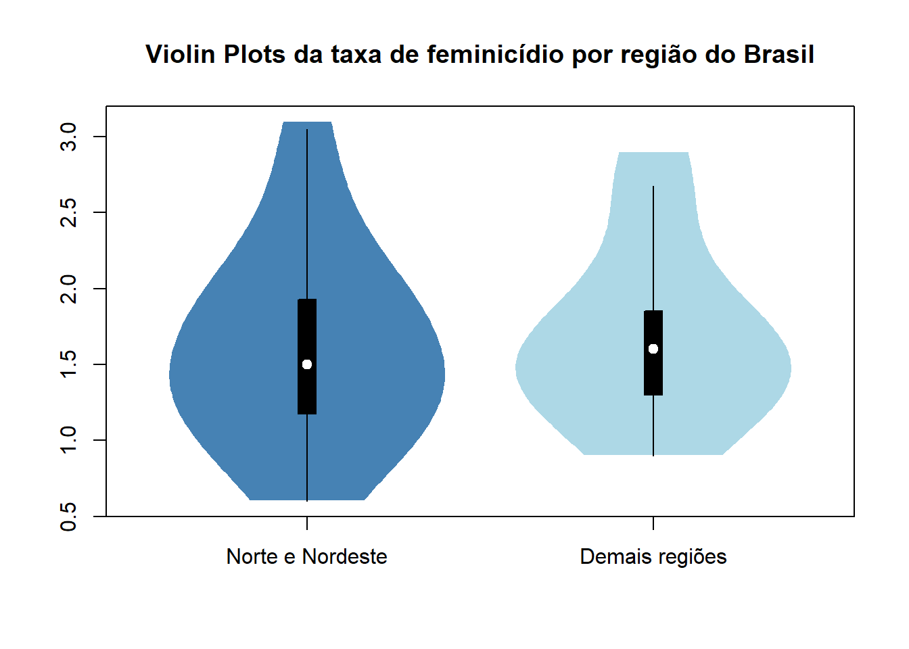
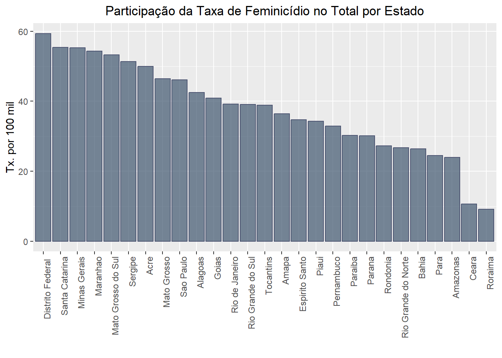

flowchart LR
A[PROBLEMA] --> B[Estratégia de Decisão]
B --> C{Solução é BOA?}
6 Análise Descritiva
Uma Introdução à Estatística
6.1 Porque Estudar Estatística?
Podemos dizer que a existência da estatística e de outras ciências está conectada a existência de problemas. Não somente a ciência mas o nosso trabalho está conectado a superação de problemas cotidianos. Tomar decisão é o dia a dia do gestor.
Segundo Popper “we study not disciplines, but problems. Often, problems transcend the boundaries of a particular discipline”
A questão central é: Como solucionamos os problemas? Utilizamos a melhor estratégia? A solução foi boa?
6.1.1 Os dois sistemas cognitivos
Os livros abaixo são boas referências sobre a tomada de decisão.


Existem dois sistemas que utilizamos para tomar decisão. O chamado Sistema 1 e o chamado Sistema 2. Segue uma breve descrição de cada um:
Sistema 1:
- Intuitivo, rápido, automático, sem esforço, implícito e emocional
- Pressa,
- Falta de tempo,
- Problemas menos importante
- Mais Falhas/Erros
Sistema 2
- Raciocíonio lento, consciente, esforçado, explícito, lógico
- Requer tempo,
- Mais recursos
- Problemas mais importante
- Menos Falhas
Para o Sistema 1 usamos a nossa intuição que chamamos de Heurística. Vejamos um pouco mais sobre esse sistema.
HEURÍSTICA
São rotinas inconscientes ou atalhos que o nosso cérebro utiliza para lidar com a complexidade.
- Modelo/Regras Intuitivas.
- Próprio do Sistema 1.
- Apesar de processo sofisticado, são passíveis de falhas. Intuição falha
Um Exemplo
Veja a figura abaixo retirada do livro do Bazerman.Responda rápido.
Qual delas tem o tampo mais quadrado?

Se você achou que é a segunda mesa, você está alinhado com a grande maioria. Nesse caso você usou o seu sistema 1
Vamos repitir a pergunta:
Qual delas tem o tampo mais quadrado?
Agora use uma régua para medir as mesas. Usamos aqui o sistema 2. Mais tempo e recursos são utlizados. Qual mesa agora você considera mais quadrada? Mudou sua opinião?
Com a régua vemos que as mesas são iguais. Isso mostra que a nossa intuição FALHA.
Tipos de Heurísticas
Heurística da disponibilidade: Usamos o que está mais próximo na memória para calcular a probabilidade.
Heurística da representatividade: Buscamos aquilo que reforça o padrão.
Heurística da hipótese positiva: Assumimos que uma determinada hipótese é verdadeira e não olhamos o contrafactual.
Heurística do afeto: Decisão considera o emocional. Seu humor afetam as decisões.
Para contornar os problemas da intuição e seus viéses na tomada de decisão o primeiro passo é compreender que eles existem e estarmos alerta. E para problemas maiores o uso do sistema 2 torna-se relevante.
Uma das principais ferramentas do sistema 2 é a Estatística. Com os avanços computacionais essa ciência tem se destacado como um dos elementos centrais do data science. Abaixo a figura resume as diversas áreas de desenvolvimento da análise de dados, obviamente não exaustiva:

Nosso objetivo é explorar nessa seção a análise descritiva. Chamado hoje no Business Intelligence, que e uma das áreas do Data Science.
6.2 Conceitos Básicos de Estatística
Novamente começamos com um problema e esse definirá a nossa análise. Vejamos alguns problemas que poderiam nos interessar…
Problema 1
O prefeito de Ribeirão Preto vai lançar uma política que fornece vouchers de alimentação para mulheres que estão em situação de pobreza.
Problema: Qual o valor que devo reservar ao programa? Quantas mulheres serão atendidas?
Problema 2
O TJSP vai lançar um programa para reduzir o tempo médio em processos de feminicídio.
Problema: Qual o tempo médio de um processo de feminicídio?
Problema 3
O O governo federal vai lançar um programa para capacitar mulheres que estão fora do mercado de trabalho.
Problema: Quantas mulheres serão alvos dessa política?
6.2.1 A Variável Aleatória
O problema nos define a população que estou interessado. Vamos seguir, a princípio, com o nosso probelma 1 para definirmos alguns conceitos importantes.
No problema 1: me interessa compreender a renda das mulheres que moram em Ribeirão Preto em dado ano. Para ficar simples vamos abreviar o que nos interessa
\[X=\text{Renda das mulheres que moram em Ribeirão Preto em determinado ano}\] Agora posso utilizar o X no lugar do nome. Olhando para a população e pensando que cada nível de renda pode ser representada por uma cor, teremos a seguinte imagem pouco de como a renda se distribui nessa população:

A questão é: quais cores existem e quantas peças de cada cor temos? Para isso usamos um experimento
EXPERIMENTO ALEATÓRIO
O experimento em ciências sociais aplicadas em geral está associada a observação sistemática de pessoas, cidades, empresas ou processos. A ideia é:
- Sortear pessoas e observar a sua caracteristica de forma indefinida e sempre na mesma condição.
- Não consigo dizer o que vai sair no próximo sorteio, apenas consigo descrever os resultados possíveis
- Se repetir o experimento um número grande de vezes uma regularidade aparece.
Se eu conseguir sortear de forma indefinida e na mesma condição as mulheres que moram em Ribeirão Preto e perguntar sobre a sua renda. Eu consigo reorganizar a figura acima da seguinte forma:

ESPAÇO AMOSTRAL
Agora conseguimos organizar os nossos resultados em um lugar chamado espaço amostral. Nele teremos todas as cores (azul, branca, amarela…) que podem acontecer e o número de peças de cada cor (a chance). Em outras palavras teremos todos os possíveis valores de \(X\) e suas probabilidades.
VARIÁVEL ALEATÓRIA
Quanto representamos esse espaço amostral em formato de números é o que chamamos de Variável Aleatória (V.A.). A V.A. é a combinação de tudo que pode acontecer, ou seja, todas as rendas que existem associadas a probabilidade de cada uma das rendas acontecerem.
Existem dois tipos principais de variáveis aleatórias: discretas e contínuas.
VARIÁVEIS ALEATÓRIAS DISCRETAS
É um tipo de variável que conseguimos colocar em lista, seja finita ou infinita \(x_1; x_2;...; x_n;...\) e associa-se a cada um dessses valores uma probabilidade \(p(x_1); p(x_2);...; p(x_n);...\)
Podemos pensar aqui se a pessoa é casada, solteira, divorciada, viúva ou outra condição. Se no processo classificamos como homicídio ou feminicídio, se mora na área urbana ou rural…
Na figura abaixo iremos coletar de 20 processos de homicídio e gostariamos de saber quando é classificado como feminicídio e quanto é classificado como homicídio (p=0,3).
feminicidio <- 0:20
plot(feminicidio,dbinom(feminicidio,size=20,prob=.3),
type='h',
main='Distribuição Binomial (n=20, p=0.3)',
ylab='Probabilidade',
xlab ='Feminicídio',
lwd=3)
VARIÁVEIS ALEATÓRIAS CONTÍNUAS
Por outro lado, uma variável aleatória contínua pode assumir infinito valores dentro de um intervalo específico. Agora temos infinitas possibilidades de resultados para \(X\) e agora associamos uma função \(f(x)\) que irá descrever o comportamento da probabilidade.
Por exemplo, a altura de uma pessoa, a sua renda, a sua idade, o tempo que demora um processo.
Abaixo temos uma representação de uma distriuição continua da renda das mulheres em Ribeirão Preto, chamada distribuição normal:
rm(list = ls(all.names = TRUE)) #will clear all objects includes hidden objects.
x<-seq(700,1300,1)
fdnorm<-dnorm(x = x, mean = 1000, sd=100)
fdanorm<-pnorm(q = x, mean = 1000, sd=100)
curve(dnorm(x,1000,100),xlim=c(700,1300),main='',xaxt="n",xlab="Renda pc Mulheres", ylab="f(x)",col="darkblue",cex.axis=0.65, cex.lab=0.8)
axis(1,at=c(900, 1000, 1100),labels =
c("-DP(X)","E(x)","DP(x)"),cex.axis=0.65, cex.lab=0.8)
lines(x=c(1000,1000),y=c(0,fdnorm[x==1000]),lty=2, col="black")
lines(x=c(1100,1100),y=c(0,fdnorm[x==1100]),lty=2, col="black")
lines(x=c(900,900),y=c(0,fdnorm[x==900]),lty=2, col="black")
6.2.1.1 Esperança e Variância
O fomato das distribuições vistas dependem principalmente de dois parâmetros: A esperança que é uma medida de centralidade e a variância que é uma medida de dispersão.
ESPERANÇA - \(E(X)\)
É uma medida de centralidade da variável aleatória. É definida como a média ponderada de todos os possíveis resultados de \(X\), onde os pesos são dados pelas probabilidades desses resultados ocorrerem. A esperança de \(X\), \(E(X)\), é calculada como:
\[E(X) = \sum_{x} x \cdot P(X = x)\]
para variáveis discretas.
\[E(X) = \int_{-\infty}^{\infty} x \cdot f(x)\],
para variáveis contínuas
VARIÂNCIA POPULACIONAL - \(Var(X)\)
A variância é uma medida que captura como os dados populacionais se dispersão em relação a sua média (ou esperança).
\[Var(X) =\frac{1}{N} \sum_{1}^{N} (X_i-E(X))^2\] Ou podemos assim representar: \[\text{Var}(X) = E(X^2) - [E(X)]^2\].
DESVIO PADRÃO POPULACIONAL - \(DP(X)\)
A variãncia é uma medida ao quadrado. Se estamos falando da renda seria uma medida da dispersão ao quadrado, ou seja, em \(R\$^{2}\). Para retornar a unidade original usamos o desvio padrão que é:
\[DP(X)=\sqrt{Var(X)}\]
Vejamos o que acontece quando mudamos a esperança e o desvio padrão. No gráfico em azul temos a esperança igual a 10 e devio padrão de 2,5. No gráfico em vermelho temos esperança de 20 e desvio padrão de 10. E no grafico em verde temos esperança de 10 e desvio padrão de 1. Nota-se que quanto menor o desvio padrão mais concentrados são os valores que podem acontecer.
curve(dnorm(x,mean=10,sd=sqrt(2.5)),xlim=c(0,30),ylim=c(0.0,0.4),xaxs="i",yaxs="i",ylab="", col="darkblue")
par(new=T)
curve(dnorm(x,mean=20,sd=sqrt(10)),xlim=c(0,30),ylim=c(0.0,0.4),xaxs="i",yaxs="i",ylab="", col="darkred")
par(new=T)
curve(dnorm(x,mean=20,sd=sqrt(1)),xlim=c(0,30),ylim=c(0.0,0.4),xaxs="i",yaxs="i",ylab="", col="darkgreen") 
6.2.2 Variáveis Aleatórias Bidimensionais
Muito provavelmente nos interessa observar mais de uma característica de um experimento. Por exemplo, não somente a renda das mulheres em Ribeirão Preto nos interessa, mas o seu consumo alimentar também julgamos importante para o projeto.
Portanto, queremos observar duas características de forma simultânea das mulheres: sua renda e seu consumo alimentar. Ou seja, duas características simultaneamente do mesmo experimento \(\epsilon\) que foi observar as mulheres no município.
Apesar de termos coletados duas informações, temos na realidade três informações. A informação da renda, a informação do consumo alimentar e a informação de como renda e consumo alimentar interagem.
VISUALIZAÇÃO GRÁFICA
Vejamos agora um exemplo de variável aleaória bidimensional:
Normal Bivariada:
Abaixo tem-se uma variável aleatória \((X,Y)\) com distribuição normal bivariada com a esperança de \(X\) igual a 1, de \(Y\) igual a 0, o desvio-padrões iguais a 3 e 2 respectivamente. Aqui consideremaos a correlação de 1 (veremos mais a frente esse conceito)
library(mnormt)
#Para tornar reproduzível
set.seed(0)
#cCriando a normal bivariada
x <- seq(-3, 3, 0.1)
y <- seq(-3, 3, 0.1)
mu <- c(1, 0)
sigma <- matrix(c(3, 1, 1, 2), nrow=2)
f <- function(x, y) dmnorm(cbind(x, y), mu, sigma)
z <- outer(x, y, f)
#Criando um gráfico de superfície
persp(x, y, z, theta=-30, phi=25, expand=0.6, ticktype='detailed')
Surge aqui um conceito importante que tenta medir como as características da população se relacionam - uma medida do relacionamento. Assim:
O que acontece com o consumo de alimentos quando a renda das mulheres sobem?
6.2.2.1 Covariância e Correlação
Duas medidas que tentam mensurar o “grau de associação” linear entre X e Y são:
COVARIÂNCIA
\[Cov(X,Y)=E[(X-E(X))(Y-E(Y))]\]
Ela mede a variabilidade conjunta de uma variável aleátoria multidimensional. Como no caso da variância, ela sofre do efeito das escalas de medidas. Para corrigir dividimos pelos desvios padrões. Surge dessa maneira a medida de correlação.
CORRELAÇÃO
\[\rho_{X,Y}=\frac{E[(X-E(X))(Y-E(Y))]}{\sqrt{Var(X)Var(Y)}}\]
Correlação
A correlação mede o GRAU DE ASSOCIAÇÃO LINEAR. Associações não lineares não são capturadas pela correlação.
Lendo a Correlação
A correlação \(\rho_{X,Y}\) varia de -1 até 1. Sendo que:
\(\rho\) próximo a 1 e -1 indicam alto grau de linearidade e \(\rho\) próximo a 0 indica ausência de relação linear - mas não diz nada sobre relações não-lineares.
VISUALIZAÇÃO GRÁFICA
Veja no gráfico abaixo que a variável 4 e 5 possuem correlação perfeita, igual a -1. E as variáveis 3 e 1 não possuem grau de associação linear, correlação próxima a 0.

6.3 Conceitos Básicos Inferência Estatística
Dado a nossa pergunta ou problema, gostariamos de saber as carcateística de uma população.
Entretantom um processo de levantamento de informações é em geral caro e em muitas situações é destrutivo. Em ciências sociais estamos interessados em características de pessoas, empresas, municípios, estados, países etc. Não é destrutivo mas é uma coleta cara. Por exemplo, o Censo demográfico de 2010 custou R$ 1,3 bilhões, ou aproximadamente R$ 2,2 bi em reais de 2020. O valor é de aproximadamente R$ 35,00 por domicílio.
Dessa forma nosso objetivo aqui é:
Objetivo
A partir de uma amostra da população realizar inferência sobre toda a população
6.3.1 Exemplos do príncipio no dia a dia
Pense nessas situações:
- Para medir a glicose muitos pacientes usam uma gota de sangue e um pequeno aparelho. A partir dele sabem quanto tem no corpo todo, basta uma gota para termos boa certeza de quanto é taxa de glicose!
- Para saber se a quantidade de sal está adequada em uma grande panela de arroz, basta uma pequena colher de chá para termos uma boa certeza!
- Abacaxis às vezes são vendidos em caminhões na rua. Quando paramos provamos e são doces. Compramos 4 por 10. Qual a certeza que esses que vc está levando estejam também doces? É diferente das situações anteriores?
Com certeza vc deve ter pensado que essas situações tem grau de certeza variáveis. A diferença está em quão homogênea é a característica na população, o sal no arroz e a glicose no sangue devem ser muito bem distribuidas, ou seja, bem homogêneas. Já a doçura no abacaxi deve ter distribuição maior e provar apenas um abacaxi não nos dá uma ideia do todo.
Esse é um erro muito comum, a partir de uma ou poucas observações dizer que o todo se comporta da mesma maneira, esse erro se agrava quando maior é a heterogeneidade!!!
6.3.2 População, Amostra, Parâmetros e Estimadores
6.3.3 População e amostra
flowchart LR A[POPULAÇÃO] --> B[Totalidade das observações sob Investigação] A --> C[AMOSTRA] C --> D[Subconjunto da População]
A definição da população depende da pergunta de pesquisa ou análise. Se queremos saber qual o salário médio dos empregados do setor industrial no estado de São Paulo para determinado ano, nossa população são todos os funcionários das indústrias instaladas no estado de São Paulo para esse ano. Se queremos os determinantes do desempenho escolar dos alunos do ensino fundamental no Brasil em 2019, nossa população será esse grupo de alunos nesse ano. Se quisermos avaliar o gasto municipal no ano anterior as eleições no Brasil, temos nossa população formada pelos municípios para o ano de análise.
População
Quem define a população é o objetivo do seu trabalho!! Ou seja, seu problema de pesquisa
6.3.4 Amostragem Aleatória Simples
Existem várias maneiras de fazer uma análise aleatória, uma delas é a simples. Vejamos primeiro um processo de amostragem não aleatório e que possui tendenciosidade. A figura abaixo mostra esse processo[^7]:

Observa-se que existe uma supervalorização do vermelho e uma subvalorização do azul. Chegariamos a conclusão, caso isso fosse uma pesquisa eleitoral, que o candidato vermelho, segunda amostra teria mais chance de ganhar e o azul quase nenhuma chance. O que não condiz com a população. Dizemos que temos uma amostra viesada ou tendenciosa.
Um processo de amostragem aleatório requer que as características presentes na população estejam presentes na amostras e estejam balanceadas, ou seja, que a sua leitura represente bem o todo.
6.4 Estatística e Parâmetro
flowchart LR A[PARÂMETRO] --> B[Medida que descreve uma característica da população]
Os parâmetros definem as características de uma população. Qual a renda média da população, qual o desemprego médio da população, qual o desempenho médio educacional, qual a expectativa de vida média na população etc. São características que em geral não observamos.
Uma pergunta, qual o tempo médio que demora um processo de feminicídio? Perceba que mesmo características da população que conhecemos são de difíceis de conhecermos. Temos que nos valer de uma parte e tentar estimar o que seriam os valores dessas características.
flowchart LR A[ESTATÍSTICA] --> B[Medida que descreve uma característica da amostra]
Sejam \(x_1, x_2,..., x_{n}\) os valores medidos a cada para cada medição de \(X\). Podemos definir uma estatística como:
\[ t= H (x_1, x_2, ..., x_{n})\]
Alguns exemplos de T:
\[ \text{Média}: \ \overline{x}=\frac{\sum_{i=1}^{n} x_i}{n}\]
\[ \text{Variância:} \ s^{2}= \frac{1}{n-1} \sum_{i=1}^{n} (x_i - \overline{x})^{2} \]
\[ x_{(1)}: Min\{x_1, ..., x_n\}\]
Vejamos a tabela abaixo que já faz uma primeira associação entre estatística e parâmetro:
| Parâmetro | Estatística | ||
|---|---|---|---|
| Esperança | \(E(X)=\mu\) | \(\bar{X}\) | Média |
| Variância Pop. | \(Var(X)=\sigma^2\) | \(S^2;\sigma^2\) | Variância Amostral |
| Mediana Pop. | Md | md | Mediana Amostral |
| Proporção Pop. | p | \(\hat{p}\) | Proporção Amostral |
Tabela 1 - Parâmetros populacionais e as Estatísticas associadas
Como regra geral, os parâmetros são representados por letras gregas e as estatística com letras do nosso alfabeto (latino) ou letra grega com com chapéu para indicar que é uma estatística.
6.5 Estatisticas Descritivas: Medidas Numéricas a partir da amostra
Existem outros métodos númericos que se constituem como alternativas adcionais para sintetizar os dados. Podemos dividir as medidas numericas em duas, temos as medidas de posíção e as de variabilidade.
MEDIDAS DE POSIÇÃO:
- Média,
- Mediana,
- Moda,
- Percentis,
- Quartis.
MEDIDAS DE VARIABILIDADE:
- Amplitude,
- Amplitude interquartil,
- Variância,
- Desvio Padrão e
- Coeficiente de Variação.
MEDIDAS DE ASSOCIAÇÃO:
- Covariancia e
- Coeficiente de Correlção.
Vamos apresentar as fÓrmulas de algumas dessas principais medidas.
final_fem_22 <- read.csv("C:/Users/Alexandre_Nicolella/Aulas/FEA-RP/Jurimetria/jurimetria/final_fem_22.csv", head=T ,sep=";")6.5.1 Medidas de Posição:
MÉDIA AMOSTRAL:
\[\bar{x} = \frac{1}{n} \sum_{i=1}^{n} x_i\]
mean(final_fem_22$feminic_tx)[1] 1.651852library(kableExtra)
mean_1<- aggregate(final_fem_22[4:17], list(final_fem_22$regiao), mean, na.rm=T)
t(mean_1) %>%
kbl(digits = 2) %>%
kable_styling()| Group.1 | CO | N | NE | S | SD |
| homic_abs | 86.25000 | 69.85714 | 149.11111 | 212.66667 | 277.50000 |
| homic_tx | 4.250000 | 6.785714 | 4.355556 | 4.000000 | 3.300000 |
| feminic_abs | 40.50000 | 18.57143 | 43.55556 | 81.00000 | 127.50000 |
| feminic_tx | 2.100000 | 1.871429 | 1.422222 | 1.600000 | 1.375000 |
| part_feminic | 50.02500 | 30.01429 | 34.36667 | 41.53333 | 43.82500 |
| rendapc | 2011.250 | 1175.286 | 1053.222 | 1983.667 | 1842.750 |
| total_abs | 126.75000 | 88.42857 | 192.66667 | 293.66667 | 405.00000 |
| mais_50 | 0.5000000 | 0.1428571 | 0.2222222 | 0.3333333 | 0.2500000 |
| t_homic_abs | 258.2500 | 161.7143 | 257.7778 | 450.6667 | 455.7500 |
| t_homic_tx | 13.375000 | 24.657143 | 9.311111 | 8.966667 | 8.875000 |
| t_feminic_abs | 126.33333 | 50.28571 | 85.11111 | 169.66667 | 185.66667 |
| t_feminic_tx | 6.500000 | 5.285714 | 3.044444 | 3.500000 | 3.000000 |
| part_t_feminic | 32.67667 | 26.44286 | 25.72444 | 25.98667 | 26.50000 |
| t_total_abs | 387.6667 | 212.0000 | 342.8889 | 620.3333 | 660.3333 |
MEDIANA:
Organize os dados em ordem crescente.
Para um numero impar de observações a mediana é o valor que ocupa a posição central.
para um número par de observações, a mediana é a média dos dois valores centrais.
median(final_fem_22$feminic_tx)[1] 1.5fun1 <- function(x, na.rm = TRUE) c(media=mean(x, na.rm = TRUE), mediana=median(x, na.rm = TRUE))
median_1 <- (sapply(final_fem_22[4:17], fun1))
t(median_1) %>%
kbl(digits = 2) %>%
kable_styling()| media | mediana | |
|---|---|---|
| homic_abs | 145.33 | 95.00 |
| homic_tx | 4.77 | 4.50 |
| feminic_abs | 53.22 | 33.00 |
| feminic_tx | 1.65 | 1.50 |
| part_feminic | 37.76 | 38.90 |
| rendapc | 1447.15 | 1267.00 |
| total_abs | 198.56 | 128.00 |
| mais_50 | 0.26 | 0.00 |
| t_homic_abs | 283.70 | 264.00 |
| t_homic_tx | 13.79 | 10.00 |
| t_feminic_abs | 102.52 | 88.00 |
| t_feminic_tx | 4.14 | 3.60 |
| part_t_feminic | 26.88 | 29.73 |
| t_total_abs | 383.00 | 377.00 |
MODA:
Moda é o valor que ocorre com mais frequência.
moda <- function(x, na.rm=T) {
modal <- unique(x, na.rm=T)
modal[which.max(tabulate(match(x, modal)))]
}
moda(final_fem_22$feminic_tx)[1] 1.3fun1 <- function(x, na.rm = TRUE) c(media=mean(x, na.rm = TRUE), mediana=median(x, na.rm = TRUE), moda=moda(x))
median_1 <- (sapply(final_fem_22[4:17], fun1))
t(median_1) %>%
kbl(digits = 2) %>%
kable_styling()| media | mediana | moda | |
|---|---|---|---|
| homic_abs | 145.33 | 95.00 | 22.0 |
| homic_tx | 4.77 | 4.50 | 4.5 |
| feminic_abs | 53.22 | 33.00 | 19.0 |
| feminic_tx | 1.65 | 1.50 | 1.3 |
| part_feminic | 37.76 | 38.90 | 50.0 |
| rendapc | 1447.15 | 1267.00 | 1010.0 |
| total_abs | 198.56 | 128.00 | 112.0 |
| mais_50 | 0.26 | 0.00 | 0.0 |
| t_homic_abs | 283.70 | 264.00 | 373.0 |
| t_homic_tx | 13.79 | 10.00 | 4.2 |
| t_feminic_abs | 102.52 | 88.00 | 54.0 |
| t_feminic_tx | 4.14 | 3.60 | 2.3 |
| part_t_feminic | 26.88 | 29.73 | NA |
| t_total_abs | 383.00 | 377.00 | NA |
PERCENTIL:
O p-esimo percentil é um valor tal que ao menos p por cento das observações são menores ou iguais à ele e pelo menos (100-p) por cento das observações são maiores ou iguais a esse valor.
Etapas para calcular o p-ésimo percentil
Etapa 1: Organize os dados em ordem crescente.
Etapa 2: Calcule um indice, \(i\) tal que \[i = \frac{p}{100} \times n\] onde \(p\) é o percentil procurado
Etapa 3:
- Se \(i\) não for um número inteiro, arredondeo-o para cima. O próximo número inteiro maior que \(i\) denota a posição do p-esimo percentil.
- Se \(i\) for um número inteiro o p-esimo percentil será a média dos valores que o ocupam as posições \(i\) e \(i + 1\).
quantile(final_fem_22$feminic_tx, probs = c(0.10,0.30,0.60,0.85), na.rm=T) 10% 30% 60% 85%
0.96 1.30 1.66 2.24 QUARTIS:
Os quartis são medidas estatísticas que dividem um conjunto de dados ordenados em quatro partes iguais.
O três quartis são:
Primeiro Quartil (Q1): Representa o valor abaixo do qual está situada a primeira quarta parte (ou 25% inferiores) dos dados quando eles estão ordenados em ordem crescente. O primeiro quartil é o valor que divide os dados em 25% (ou 0.25) abaixo e 75% (ou 0.75) acima desse ponto.
Segundo Quartil (Q2): Corresponde à mediana dos dados, dividindo o conjunto em duas metades iguais. É o valor que separa os 50% inferiores dos 50% superiores dos dados.
Terceiro Quartil (Q3): Indica o valor acima do qual está situada a terceira quarta parte (ou 25% superiores) dos dados quando eles estão ordenados. Assim como o primeiro quartil, o terceiro quartil divide os dados em 75% (ou 0.75) abaixo e 25% (ou 0.25) acima desse ponto
quantile(final_fem_22$feminic_tx, na.rm=T) 0% 25% 50% 75% 100%
0.60 1.30 1.50 1.95 3.10 Boxplot
O boxplot é um gráfico que traz muitas informações e pode ser visto como a distribuição de probabilidade dos dados. O box contém 50% dos dados. O limite superior indica o percentil de 75% (Q3) e o limite inferior indica o percentil de 25% (Q1). A linha que corta o box indica a mediana, ou seja, Q2. Os bigodes são calculados com base na distância interquantílica, ou seja,
Limite inferior: Q1-1,5(Q3-Q1)
Limite superior:Q3+1,5(Q3-Q1)
Dados fora desses limites são classificados como suspeitos de serem outlier. Podemos observar a assimetria dos dados quando a mediana não está no meio da caixa, indicando maior densidade na menor distância entre os quartis Q1 ou Q3 e a mediana Q2. Vejamos agora o boxplot da taxa de feminicídio e fora da âncora cambial.
boxplot(final_fem_22$feminic_tx,data=final_fem_22, main="Boxplot da taxa de feminicídio no Brasil, 2022", horizontal=TRUE,
xlab="", ylab="Tx de Feminicídio/100mil", col="steelblue")
library(ggplot2)
Anexando pacote: 'ggplot2'Os seguintes objetos são mascarados por 'package:psych':
%+%, alphap<-ggplot(final_fem_22, aes(y=feminic_tx)) +
geom_boxplot(fill='steelblue') +
coord_flip()
p+labs(title="Tx Feminicídio por 100 mil no Brasil 2022",
x ="", y = "Tx Feminicídio")
O Violin Plot é muito parecido com o BoxPlot mas com a densidade de kernel rotacionada em cada um dos lados. Assim, indica a distribuição dos dados em cada ponto e vem anotado a mediana na forma de um ponto ou marca e um pequeno boxplot no centro do violin plot.
#Binária para nordeste e norte 1 e demais regiões 0
final_fem_22$N_NE<-0
final_fem_22$N_NE[final_fem_22$regiao == "N" | final_fem_22$regiao == "NE"] <- 1
table(final_fem_22$N_NE, final_fem_22$regiao)
CO N NE S SD
0 4 0 0 3 4
1 0 7 9 0 0library(vioplot)
x1 <- final_fem_22$feminic_tx[final_fem_22$N_NE==1]
x2 <- final_fem_22$feminic_tx[final_fem_22$N_NE==0]
vioplot(x1, x2, names=c("Norte e Nordeste", "Demais regiões"), col=c("steelblue", "lightblue"), border="white" )
title("Violin Plots da taxa de feminicídio por região do Brasil")
Aqui segue uma sugestão de plotar o histograma juntamente com o boxplot, possibilitando em um mesmo gráfico uma maior quantidade de observação. Veja abaixo:
par(fig=c(0,0.6,0,0.6), new=TRUE)
hist(final_fem_22$feminic_tx, main="", xlab="Taxa Feminicídio", ylab="Frequência", col="lightblue2")
par(fig=c(0,0.6,0.15,0.9), new=TRUE)
boxplot(final_fem_22$feminic_tx, horizontal=TRUE, axes=FALSE, col="navajowhite2")
AMPLITUDE:
Amplitude é a diferença entre o valor mínimo e máximo de uma série de dados.
\[\text{Amplitude} = \text{Maior Valor} - \text{Menor Valor}\]
min_max<-range(final_fem_22$feminic_tx)
amp<-min_max[2]-min_max[1]
amp[1] 2.5AMPLITUDE INTERQUANTIL:
A amplitude interquartil é dada pela diferenca entre o terceiro (\(Q_3\)) e o primeiro quartil (\(Q_1\)).
\[IQR = Q_3 - Q_1\]
qs<-quantile(final_fem_22$feminic_tx, na.rm=T)
iq<-qs[4]-qs[2]
IQR(final_fem_22$feminic_tx)[1] 0.65iq 75%
0.65 6.5.2 Medidas de Variabilidade
A variância amostral é uma medida estatística que indica o quão dispersos estão os dados em relação à média amostral. Em outras palavras, ela quantifica a extensão das diferenças individuais entre os valores observados e a média da amostra.
A variância populacional é semelhante à variância amostral, mas é calculada utilizando todos os dados de uma população em vez de uma amostra. Ela descreve a dispersão dos dados em relação à média populacional.
VARIÂNCIA E DESVIO PADRÃO AMOSTRAL:
\[s^2 = \frac{\sum_{i=1}^{n} (x_i - \bar{x})^2}{n-1}\] onde \(\bar{x}\) é a média amostral.
O desvio padrão é derivado da variância. Podemos qualcular essa estatistica da seguinte maneira:
Desvio padrão amostral:
\[s = \sqrt{s^2} = \sqrt{\frac{\sum_{i=1}^{n} (x_i - \bar{x})^2}{n-1}}\]
COEFICIENTE DE VARIAÇÃO:
O coeficiente de variação (CV) é uma medida de dispersão relativa que expressa a variabilidade dos dados como uma porcentagem da média.
\[\text{CV} = \left( \frac{\text{Desvio padrão}}{\text{Média}} \right) \times 100\%\]
O r calcula essas estatisticas de maneira muito eficiente com apenas uma linha de comando.A função summary() em R fornece um resumo estatístico básico das variáveis numéricas presentes em um data frame. Ao aplicar summary() a um data frame, as seguintes estatísticas são calculadas para cada coluna numérica:
Mínimo (Min): O menor valor observado na variável. 1º Quartil (Q1): O valor que separa os 25% inferiores dos dados. Mediana (50º Percentil): O valor que separa os 50% inferiores dos 50% superiores dos dados. Média (Mean): A média aritmética dos valores. 3º Quartil (Q3): O valor que separa os 75% inferiores dos dados. Máximo (Max): O maior valor observado na variável.
6.5.3 Medidas de Associação
COVARIÂNCIA AMOSTRAL
Covariância entre duas variáveis: A covariância entre duas variáveis X e Y é uma medida estatística que descreve como essas variáveis variam juntas. Em outras palavras, a covariância indica a tendência de X e Y de se moverem na mesma direção (covariância positiva) ou em direções opostas (covariância negativa).
\[\text{Cov}(X, Y) = \frac{1}{n-1} \sum_{i=1}^{n} (X_i - \bar{X})(Y_i - \bar{Y})\]
CORRELAÇÃO
O coeficiente de correlação entre duas variáveis X e Y é uma medida estatística que descreve a força e a direção da relação linear entre essas variáveis. O coeficiente de correlação é frequentemente representado pelo coeficiente de correlação de Pearson, \(r_{XY}\).
\[r_{XY} = \frac{\text{Cov}(X, Y)}{s_X s_Y}\] O coeficiente de correlação de Pearson é uma medida amplamente utilizada para avaliar a relação linear entre variáveis, pois fornece uma interpretação padronizada da força e direção da relação, independentemente das unidades das variáveis.